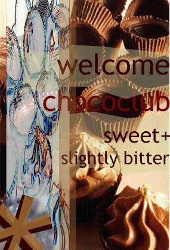

폭이 100픽셀, 높이가 100픽셀 보다 더 긴 내용이다
따라서 필요한 수직 스크롤 바가 나타난다.
이 내용은 visibility속성 값을 visible로 지정했기 때문에 화면에 보일 것이다.
그러나 visibility 속성 값을 hidden으로 지정하면 이 내용은 화면에 보이지 않는다.
- 첫째 항목이다
- 두번째 항목이다
- 세번째 항목이다
- 첫째 항목이다
- 두번째 항목이다
- 세번째 항목이다
이 내용은 상하좌우 바깥쪽 여백이 10픽셀씩 적용되어 나타난다.
이 내용은 테두리 기준 안쪽여백이 상하좌우 10픽셀씩 적용되어 나타난다.


테두리 선 / 색상 바꾸기
네이버
구글
다음